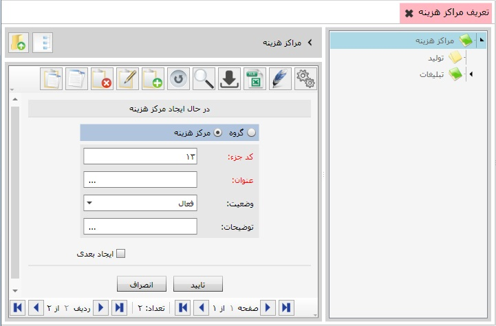

تعریف مراکز هزینه
در این بخش شما می توانید هزینه های خود را تقسیم بندی کنید
همچنین با ایجاد مراکز هزینه برای بخش های مختلف میتوانید
هزینه هر بخش را به بخش مربوطه ارجاع دهید،
پیشنهاد می شود ابتدا مراکز هزینه ی خود را گروه بندی کنید،
سپس در درون هر گروه مرکز هزینه ی مربوط به آن را تعریف نمایید،
برای تعریف گروه و مراکز هزینه از نوار ابزار گزینه ی اضافه یا F8 را بزنید ،
تصویر زیر نمایان می شود

در تصویر بالا درون کادر سبز رنگ دو گزینه مشاهده می کنید
گزینه ی اول برای تعریف گروه و گزینه ی دوم برای تعریف شعبه می باشد
برای تعریف گروه کافی است اطلاعات مربوط به آن را تکمیل کنید و گزینه ی تایید را بزنید
برای تعریف یک شعبه در درون یک گروه روی نام گروه مورد نظر دوبار کلیک کنید
از نوار ابزار گزینه ی اضافه یا F8 را بزنید
گزینه ی ایجاد شعبه را فعال کنید ،
اطلاعات مربوط به آن را تکمیل کرده و گزینه ی تایید را بزنید
شعبه در گروه مورد نظر ایجاد خواهد شد